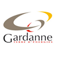

VOUS MOURREZ D'ENVIE DE PARTICIPER A L'AVENTURE GAMING-GEN, CONTACTEZ-NOUS!

Ville de gardanne
La municipalité ainsi que le Service Jeunesse de Gardanne sont nos partenaires depuis nos premiers pas.
Grâce à leur aide logistique, matériel et humaine la Gaming Gen a pu se développer.
L’expert en informatique, image & son à Gardanne. L’un de nos plus précieux partenaires, qui apporte notamment de nombreux lots pour les vainqueurs des tournois.
Antec est le premier constructeur de composants et accessoires informatiques d’assemblage (boitiers PC, alimentations, ventilateurs…).
Antec fournit des lots pour les vainqueurs du tournoi CS GO notamment.
Gigabyte est le leader des innovations high-tech sur le marché des cartes mères, cartes graphiques et autres composants PC.
Gigabyte fournit des lots pour les vainqueurs du tournoi CS GO notamment.
Deco n Pix proposera un atelier mêlant le graffiti au retro-gaming, le tout de manière très ludique : raconter l’histoire de l’évolution technologique du jeu-vidéo, du 8 au 64 bit, de la 2D à la 3D.
Un graff sur planche en bois, réalisé pendant la GG4, sera à gagner lors d’un tournoi retro-gaming.
Situé en centre-ville de Marseille, la Boutique du Geek propose des produits et gadgets originaux, de la robotique au modélisme, en passant par l'informatique, elle comblera toutes les attentes du geek !
La BdG offre plusieurs lots pour les tournois de la GG4, ainsi qu’une démonstration de drones.
Association Gardannaise qui promeut les jeux de rôle, de figurines, de plateaux…
Lors de la GG4, la GdJ organisera un grand tournoi Splendor ainsi que de l’initiation et des démonstrations.
Spécialiste des jeux de plateau, de réflexion et d'ambiance, Oren saura vous proposer des jeux adaptés à vos envies.
Lors de la GG4, a BdO organisera 2 tournois Magic et participera à la dotation du tournoi Splendor.
Association spécialisée dans les jeux musicaux, l'association Azur Games sait mettre l'ambiance.
Un stand et 3 jeux durant la Gaming Gen 4, ainsi qu'un tournoi et de nombreuses surprises.
L'école EsupCom Aix forment les futurs communiquants, publicitaires et artistes de demain.
Créée par les étudiants de l'école, une exposition sur le thème du Jeu sera mise en place durant la GG4.
Cette confirserie ambulante gérée par deux gamers saura faire saliver vos papilles.
La confiserie GAIOR participera également à la dotation du tournoi CS GO.
Cette association fait la promotion de l'Awale, ce magnifique jeu de plateau africain.
Au programme durant la Gaming Gen 4 : initiations et tournois, avec plateaux d'Awale à gagner.
Spécialiste de jeux pour enfants, jeux éducatifs, jeux de société... la Ravensburger n'est plus à faire !
De nombreux jeux Ravensburger en accès libre seront disponibles et certains seront même à gagner...